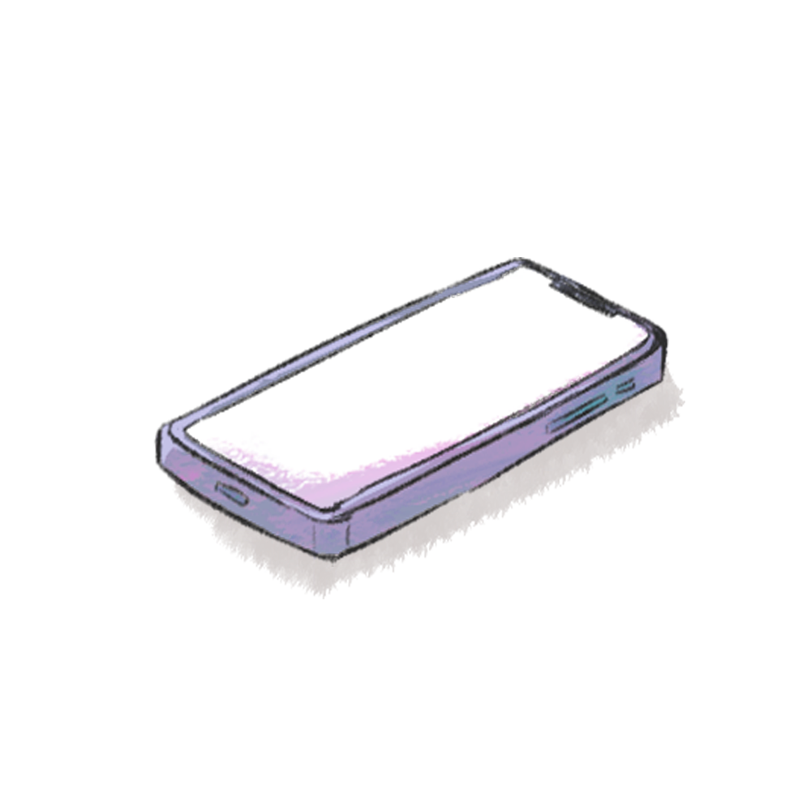
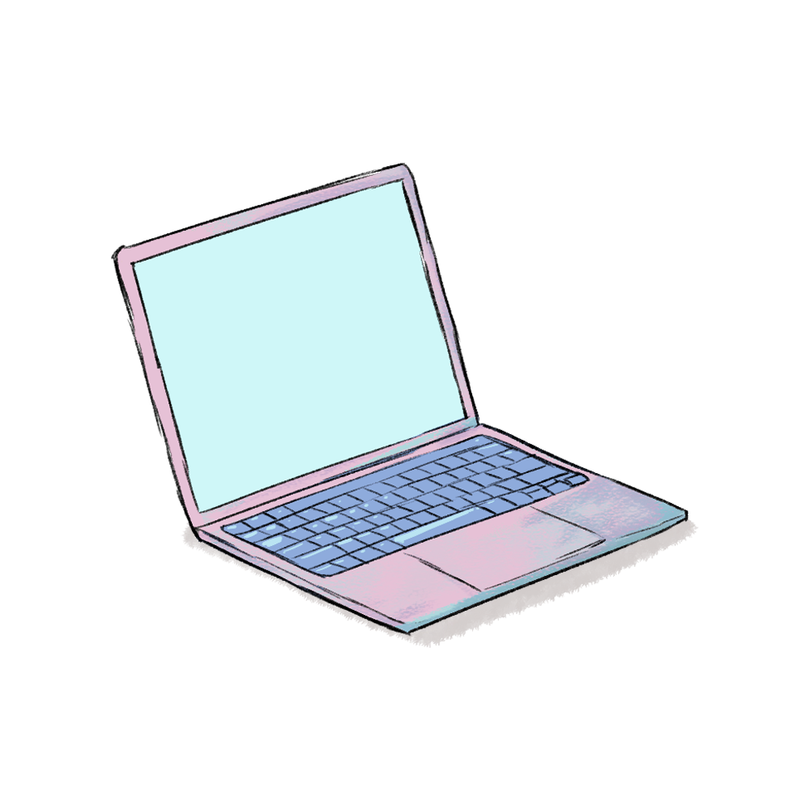
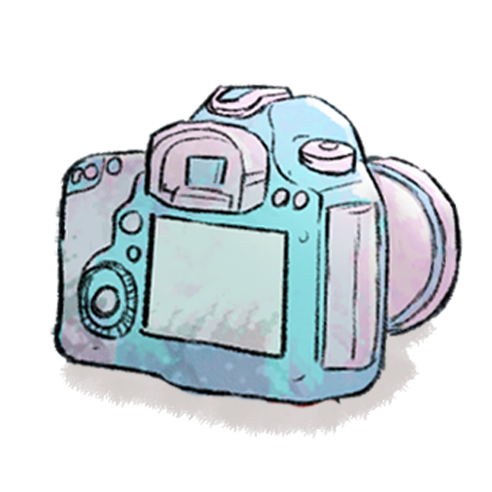

1

Scene 1: Posting
" Adjust your post for better visibility. "
" Adjust your post for better visibility. "
2

Scene 2: Replying
" You have 5 comments left to reply."
" You have 5 comments left to reply."
3

Scene 3: Taking Selfie
" Smile and capture your platform self."
" Smile and capture your platform self."